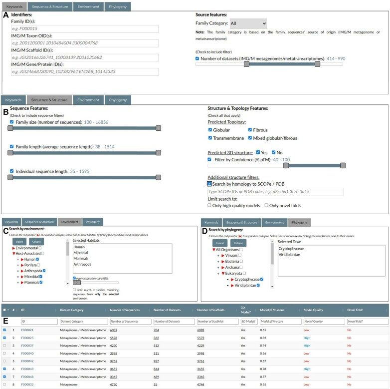
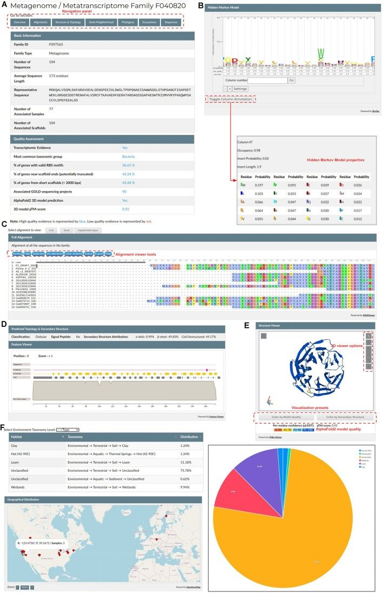
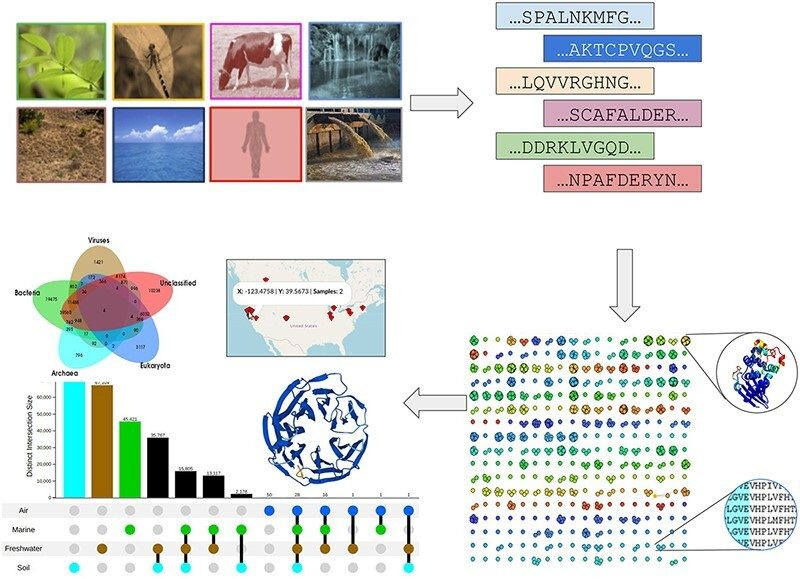

NMPFamsDB: a database of novel protein families from microbial metagenomes and metatranscriptomes
Abstract
AbstractThe Novel Metagenome Protein Families Database (NMPFamsDB) is a database of metagenome- and metatranscriptome-derived protein families, whose members have no hits to proteins of reference genomes or Pfam domains. Each protein family is accompanied by multiple sequence alignments, Hidden Markov Models, taxonomic information, ecosystem and geolocation metadata, sequence and structure predictions, as well as 3D structure models predicted with AlphaFold2. In its current version, NMPFamsDB hosts over 100 000 protein families, each with at least 100 members. The reported protein families significantly expand (more than double) the number of known protein sequence clusters from reference genomes and reveal new insights into their habitat distribution, origins, functions and taxonomy. We expect NMPFamsDB to be a valuable resource for microbial proteome-wide analyses and for further discovery and characterization of novel functions. NMPFamsDB is publicly available in http://www.nmpfamsdb.org/ or https://bib.fleming.gr/NMPFamsDB.
Introduction
Metagenomics is the study of metagenomes, defined as the total amount of genomic material in an environmental sample. Metagenomic (DNA) and metatranscriptomic (RNA) shotgun sequencing of complex biological samples has emerged as a prevalent source of information in the study and classification of microorganisms, as well as a treasure trove of novel sequence data (1). Advances in high-throughput shotgun sequencing technologies have improved the quality and reduced the cost of the method, resulting in a significant increase in the available metagenome and metatranscriptome sequences. All of the above has led to the application of metagenomics and metatranscriptomics to various biological fields, from ecology and biotechnology to disease diagnosis and treatment (2).
In order to extract the genetic composition of metagenomic samples, researchers usually follow two distinct methods: in the first, sequence reads are accurately mapped to a known, annotated set of reference genome sequences to provide a quick overview of the presence of known organisms, genes and potential functions. The MG-RAST system (3) is one of the most popular implementations of this analysis type. Conversely, the second method employs the massive de novo assembly of the reads into contigs/scaffolds, which can provide invaluable insights into the presence of novel organisms and their genetic makeup in the analyzed samples. Advances in assembly and binning tools (4) have led to a significant increase in the assembled fraction of the average metagenome, coupled with a parallel exponential increase in the number of metagenome-assembled genomes (MAGs). Popular repositories employing this approach include the Integrated Microbial Genomes with Microbiome Samples (IMG/M) (5) and MGnify (6).
Despite their respective strengths, both methods share the same limitation with regards to gene annotation, which primarily relies on predicting gene function by searching for homologs in fully sequenced reference genomes or in gene and protein classification databases such as Pfam (7), InterPro (8), COG (9) or KEGG Orthology (10). While this approach can help annotate sequences that map to reference families, any genes predicted in assembled metagenomic data with no hits to any of the aforementioned resources are typically ignored and dropped from any subsequent analysis. As a result, the vast majority of existing metagenomic sequence data remains unexplored, limiting the ability to investigate the true diversity of the so-called functional dark matter.
In this study we present NMPFamsDB, a publicly available database of novel metagenome protein families, with no similarity to known protein domains or reference genomes and proteomes. Data in NMPFamsDB has been derived from microbial metagenome and metatranscriptome sequences from IMG/M (5). Novel sequences with no hits to Pfam (7) or reference genomes were clustered into families (NMPFs) based on sequence identity. For each NMPF, multiple sequence alignments (MSAs) and Hidden Markov Models (HMMs) were calculated. NMPFs are also accompanied by environmental and taxonomic metadata along with high-quality protein structure and topology predictions, including 3D structure models.
Materials and methods
Data retrieval and clustering
Protein sequences (longer than 35 amino acids (aa)) were collected from the IMG/M platform (5) for all public reference (isolate) genomes and assembled metagenomes and metatranscriptomes, and were filtered to remove low complexity regions. The reference genome dataset was represented by 89 412 bacterial, 9202 viral, 3073 archaeal and 804 eukaryotic genomes, which corresponded to 87 084 214 bacterial, 221 027 viral, 2 464 569 archaeal and 4 902 193 eukaryotic proteins, resulting in a final reference dataset of 94 672 003 protein sequences. Similarly, protein sequences with length ≥35aa and from scaffolds longer than 500 bp were collected from 20 759 metagenomes and 6172 metatranscriptomes and were translated to a non-redundant set of 8 364 611 943 predicted protein sequences. To identify the microbial functional dark matter, protein sequences with hits to Pfam-A (7) (using each Pfam profile's trusted cutoff) or to any sequences from the reference genome set (30% identity, 70% alignment length) were discarded, resulting in an unexplored metagenomic protein space consisting of 1 171 974 849 protein sequences.
After generating an all-versus-all sequence similarity network (SSN) (70% identity, 70% alignment length), the HipMCL clustering algorithm (11) was utilized to generate protein clusters (families). With the use of 2500 compute nodes (170 000 compute cores), HipMCL clustered the SSN in 3.5 h and generated 113 752 protein clusters with 100 members or more. Each cluster was represented by a full multiple sequence alignment (MSA), containing all cluster members, as well as a non-redundant ‘seed’ MSA using the definitions dictated by the Pfam database (max. 80% sequence identity, min. 75% alignment coverage). The seed MSAs were also used to produce Hidden Markov Model (HMM) profiles in the HMMER/Pfam (12) and HH-suite (13) formats. The consensus sequences of the MSAs were further searched against the reference genomes and Pfam-A to identify and discard distant homologs, as well as against the reference proteomes of RefSeq (14) and the unannotated clusters of Pfam-B. The final dataset (henceforth referred to as Environmental Dataset—ED) consisted of 19 986 348 non-redundant sequences from metagenomes and metatranscriptomes that were organized in 106 198 protein clusters (henceforth referred to as Novel Metagenome Protein Families (NMPFs)).
Structural predictions and protein fold recognition
The query sequences for structural analysis of NMPFs were determined by taking the central (pivot) sequence of each seed MSA. Central sequences were defined by performing pairwise distance calculations, creating an all-against-all distance matrix and selecting the sequence with the minimum Hamming distance from the alignment's average sequence. Calculations were performed using Python and the TensorFlow (15), SciKit (16) and Biopython (17) libraries. Positions not aligned to the query sequence were removed before further analysis. The resulting pivot sequences were submitted to a number of prediction methods in order to obtain as much structural and topological annotation as possible. Secondary structure predictions were performed using Porter v.5 (18). Disordered regions were predicted using the MobiDB-lite consensus algorithm (19). Signal peptides were predicted using SignalP-6.0 (20). Finally, protein topology prediction was performed in two stages: in the first stage, the sequences were submitted to PRED-CLASS (21), a neural network-based algorithm capable of discriminating protein topology for four categories (globular, transmembrane, fibrous and mixed globular-fibrous). In the second stage, sequences predicted as transmembrane by PRED-CLASS were submitted to Phobius (22) and PRED-TMBB2 (23) for the topology prediction of α-helical transmembrane proteins and transmembrane β-barrels, respectively. Results for structure and topology analysis are given in Supplementary Table S1.
3D structural predictions were performed using AlphaFold2 (24), resulting in 80 585 3D models. For the NMPF clusters with available 3D models, the secondary structure predictions of Porter5 were replaced by the secondary structure assignments of the models, calculated using DSSP (25,26). The generated 3D models were evaluated based on their pLDDT and predicted TM (pTM) scores; 13096 high-quality models (with pTM > 0.7) were identified and were subsequently searched against the SCOPe (27) and PDB (28) databases to detect structural homologs, using the TM-align (29) and MM-align (30) structure-based alignment methods. Models with no homologs to either database (TM-score < 0.5) were considered as potential novel structural folds. In addition to the above, models were clustered using TM-align and an all vs all approach, with a TM-score cutoff of 0.5 (Supplementary Table S2).
Taxonomic, environmental and geographical annotation
The metadata obtained from the ED dataset was used to annotate each NMPF cluster with regards to their associated ecosystems and geographical distribution. For ecosystems, the GOLD (31) ecosystem classification was used to organize datasets into ecosystem groups. Additional environmental annotation was provided by mapping the ED datasets to the Environment Ontology (ENVO) (32) and Earth Microbiome Project Ontology (EMPO) (33) schemes, based on the metadata of their associated GOLD studies. Each NMPF was then assigned to one or more ecosystems based on the ecosystem information of the ED dataset in which its sequences were found. Similarly, the geographical location metadata of the ED dataset, when available, was retrieved and mapped to their corresponding NMPFs.
Similar to the ecosystem metadata, NMPF taxonomic annotation was performed by assigning the taxonomy of the source sequencing scaffolds to each family's contained sequences. Initial taxonomic metadata was retrieved from the IMG/M (5) records of each sequencing scaffold, where available. Notably, the majority of the scaffolds used were too short and thus remained taxonomically unclassified. In addition, there was very little information on the taxonomy of viral scaffolds, or the existence of potentially unidentified eukaryotic sequences. To alleviate these issues, annotations for scaffolds >5 kb that had previously been identified as viral and included in IMG/VR v. 3.0 (34) were used. In addition, scaffolds of length 1–5 kb were analyzed with DeepVirFinder v1.0 (35) and the generated p-values were subsequently converted to q-values to obtain estimates of the false-discovery rate. Scaffolds with q ≤ 0.001 were retained as putative viral scaffolds. Unclassified scaffolds were further analyzed to identify potential eukaryotic sequences using two eukaryotic sequence detection tools, Whokaryote (36) and EukRep (37). Furthermore, the NMPF clusters were searched against the Tara Oceans collection of eukaryotic MAGs (38). Finally, all remaining unclassified scaffolds were analyzed using the MMseqs2 taxonomy tool (39), performing six-frame translation searches against UniRef50 (40) and assigning each analyzed scaffold to the lowest common ancestor of the best hits for each frame.
NMPF quality metrics
In order to evaluate the quality of each NMPF, a number of criteria have been established, based on the different analyzed aspects of the families. These metrics include the following: (i) Transcriptomic evidence, i.e. the existence of metatranscriptome-derived sequences, (ii) the most common taxonomic group, (iii) the percentage of genes with valid ribosome-binding site (RBS) motifs, (iv) the percentage of genes near scaffold ends, (v) the percentage of genes coming from short (<2 kb) scaffolds, (vi) the number of associated GOLD sequencing projects, (vii) 3D structure prediction with AlphaFold2 and (viii) the predicted TM-score (pTM) of the 3D model. Transcriptomic evidence (i) refers to the existence of actively expressed genes in an NMPF; indicating on the validity of the contained sequences. The most common taxonomic group (ii) refers to the taxonomy shared by the majority of the NMPF’s sequences at the kingdom level (bacteria, archaea, eukaryota, viruses or unclassified). The existence of RBS motifs (an indicator of a valid start codon) (iii), percentage of sequences near scaffold ends (iv) and percentage of sequences from short scaffolds (v) are all indicators of whether the NMPF is composed by complete (valid start or stop sites) or potentially truncated sequences; generally speaking, a high percentage of RBS-containing genes and low percentages of sequences from short scaffolds and/or near scaffold ends indicates that most sequences in the family are complete. The number of associated GOLD projects (vi) is an indication of whether the sequences come from distinct sequencing projects, rather than different analyses of the same project (potential technical replicates). Finally, the existence of an AlphaFold2 3D model (vii) shows that the NMPF’s MSAs are robust enough to produce a 3D structure through co-evolution patterns, while the pTM score (viii) is an indicator of the overall structural integrity of that structure.
Implementation
The frontend of NMPFamsDB is implemented in HTML, CSS and JavaScript. The backend is supported by an Apache web server and a MySQL relational database. Server-side programming is mainly handled by PHP, while additional operations are implemented using Python and R/Shiny. The NMPFamsDB Application Programming Interface (API) was implemented using the Slim Framework (https://www.slimframework.com/). Sequence logos are rendered using Skylign (41). MSAs are visualized using MSAviewer (42). Structure and topology predictions are visualized using the SIB/nextProt feature viewer (43). 3D models are rendered with the Molstar (Mol*) structure viewer (44). Maps are rendered using the OpenLayers API (https://openlayers.org/). Sequence queries in the database are performed using LAST (45) for pairwise sequence alignments and HMMER v. 3.2 (12) for HMM-based searches. Interactive tables are generated using the DataTables package (https://datatables.net/). Plots are generated using the JavaScript/ApexCharts, Processing/P5, R/ggplot2 (46), R/plotly (47), R/chorddiag and R/upsetjs packages.
Results
Database components
In its current version, NMPFamsDB contains a total of 106198 NMPFs, each with 100 members or more. In the database, each NMPF has been assigned a unique, 7-digit identifier (F000001 to F106198). A distribution of NMPFs based on their average sequence length and number of clusters is given in Supplementary Figure S1. An analysis of all NMPFs based on the established quality metrics (see Methods section ‘NMPF quality metrics’) shows that the majority of NMPFs (n = 67906) contain at least a fraction of metatranscriptome-derived sequences; specifically, 64186 NMPFs comprise a mixture of metagenome and metatranscriptome sequences (Mixed Metagenome/Metatranscriptome), while 3720 clusters come exclusively from metatranscriptomes (Metatranscriptome-only) and 38 292 from metagenomes (Metagenome-only). With regards to each NMPF’s most prevalent taxonomy, 59 780 NMPFs are classified as primarily bacterial, 2843 as archaeal, 7930 as eukaryotic, 13 963 as viral and 21 682 as unclassified. 63 820 NMPFs contain genes with valid RBS motifs, while 71 710 NMPFs are primarily composed from sequences that are likely to be complete (i.e. have low percentages of members from short scaffolds or from near scaffold ends). 95375 NMPFs are derived from multiple GOLD sequencing projects (50 or more per family). Finally, most NMPFs (n = 80 585; 75.88%) have 3D structure models predicted with AlphaFold2, while 13 096 of these predictions can be considered high-confidence (pTM-score > 0.70).
Apart from the NMPFs themselves, NMPFamsDB also hosts the metadata of the ED datasets and their associated sequencing scaffolds, from which the analyzed protein sequences were derived. Specifically, the database contains 19 326 ED datasets (14 913 metagenomes and 4413 metatranscriptomes). Each dataset is represented by its IMG/M-assigned Taxon OID. NMPFamsDB also holds 17280119 scaffolds, each represented by its IMG/M assigned Taxon and Scaffold OIDs. Of these scaffolds, approximately 36.2% (n = 6 257 223) remained unclassified with regards to their taxonomy; the rest were classified as bacterial (n = 80 49 154), archaeal (n = 382 761), eukaryotic (n = 1184393) and viral (n = 1 406 588). Finally, NMPFamsDB contains 1972 distinct ecosystems, organized using a hierarchical system derived from GOLD Ecosystems and grouped into three main categories: Environmental (n = 1132), Host-associated (n = 459) and Engineered (n = 228). Each of these categories was further divided into subcategories (Terrestrial, Aquatic, Human, Mammal, Plants etc.). The metadata of the datasets, scaffolds and ecosystems, was also used to annotate their associated NMPFs; as such, each NMPF contains all annotations derived from its associated datasets and scaffolds, including taxonomic associations, ecosystems and geolocation information.
The NMPFamsDB interface
The data contained in the NMPFamsDB web page can be accessed through the Browse menu at the NMPFamsDB navigation bar. Through the Browse Families page users can navigate the database's NMPFs and perform both simple and complex queries (Figure 1). Specifically, users can search NMPFs using NMPFamsDB identifiers or the keywords of their related IMG/M metagenome datasets (Taxon OID), scaffolds (Scaffold ID) or sequences (Gene ID). They can also choose to retrieve NMPFs based on the category of their sequences (Metagenome-only, Metatranscriptome-only, Mixed, or all families), or limit their searches to families with a selected number of datasets (Figure 1A). In addition, users can perform searches by applying filters to the NMPFs’ sequence and structure features, namely, the number or average length of sequences in the family, the predicted protein topology, the existence of a 3D structure model and its confidence (Figure 1B). Finally, they can perform searches based on the ecosystem (Figure 1C) or taxonomic metadata (Figure 1D) of the families.

All of the above can be accessed through the panels at the top of the Browse Families page, with search options grouped into four categories (Keyword, Sequence & Structure, Environment and Phylogeny). Notably, multiple search parameters can be combined to create complex queries, e.g. a search can be performed for metagenome-only families, with an available 3D structure having a confidence of at least 70%, that have been associated with Host-associated ecosystems. The results of the queries are presented in an interactive table at the bottom of the search panel (Figure 1E) in paginated form. The results can be filtered using the search fields located below the column labels. Each individual NMPF entry can be accessed by clicking the link of its identifier. Finally, one or more entries can be selected using the checkboxes at the left side and exported in comma- or tab-delimited format.
The data of each individual NMPF can be explored by visiting its respective Family Entry page (Figure 2). The family entry is organized into distinct sections, accessible through a navigation browser at the top of the entry. The Overview section contains basic NMPF information (Figure 2A), including its category, the number of associated sequences, datasets and scaffolds, the family's average sequence length, and a representative sequence, derived from the family's MSA. In addition, the section lists the NMPF’s quality metric values and displays its most common taxonomic group and most abundant ecosystem classification. It also contains an interactive Sequence Logo viewer for the family's HMM profile (Figure 2B). The logo can be navigated with the mouse; clicking on any logo position, or clicking the Toggle Column Annotation button will open a window showing that particular position's residue probabilities in the HMM. The profile itself is also available for download in the HMMER and HH-suite formats, accessible through the download button at the top of the entry.

The Alignments section (Fig. 2C) contains an interactive alignment viewer, through which the NMPF’s Full and Seed MSAs can be inspected. The viewer offers a number of options for visualizing and filtering the alignments, accessible through a menu at the top of its panel. These include different coloring schemes for amino acids, filtering alignment positions based on sequence identity or column occupancy, searching the MSAs using sequence patterns or regular expressions, and visualizing elements such as conservation histograms, sequence logos or the family consensus on top of the MSA. The MSAs are available for download in the FASTA format through the download button at the top of the entry. In addition, the sequences themselves can also be found in the Sequences section at the bottom of the entry page.
The structural and topology annotation of the NMPF can be found in the Structure & Topology section (Fig. 2D). Annotations are mapped in the family's pivot sequence and are shown in graphical format through an interactive feature viewer; these include the predicted topology of the NMPF, its secondary structure and per-residue structure confidence score and, based on the family's topology, the presence or absence of specific topological features, such as a signal peptide or transmembrane segments. If a 3D model is available for the family, it is also shown in an interactive 3D viewer at the right of the section (Figure 2E). Finally, if the 3D model has significant similarity (TM > 0.5) to known protein domains, derived from the SCOPe database, the top 5 hits are shown in a list at the bottom of the section.
Apart from the above, each NMPF is further annotated with metadata, based on the associated ED datasets and sequencing scaffolds. Taxonomic annotation is provided from the sequencing scaffolds and is available in the Phylogeny section. In addition, if, through the scaffolds’ annotation, the NMPF’s sequences have been found to be in close proximity to protein-coding genes with known structural or functional domains (Pfam families), the latter are presented in a distinct section called Gene Neighborhood. Finally, the Environmental Properties section shows the ecosystem annotation and geographical distribution of the NMPF based on its datasets (Figure 2F). The associated ecosystems are presented in an interactive table and associated pie chart graph, while the geographical distribution of the family is shown in an interactive world map, with each point corresponding to the longitude and latitude coordinates of an ED dataset.
Similar to NMPFs, the database's protein sequences, ED datasets, scaffolds and ecosystems can be accessed through the Browse Sequences, Datasets, Scaffolds and Ecosystems pages respectively (Supplementary Figures S2–S5). Queries can be performed in a manner similar to NMPFs by using the search panel at the top of each page, with search options including family, dataset, scaffold or sequence identifiers, dataset category, taxonomic assignments and ecosystem associations. In addition, ED datasets can be queried based on their sequencing center and sampling location, while scaffolds are based on contig length. Search results are returned in table format and can be exported in a tab- or comma-delimited file; in addition, sequence search results can be exported in the standardized FASTA format for further analysis.
NMPFamsDB holds the detailed records of the analyzed ED datasets and scaffolds, accessible through their dedicated Dataset and Scaffold Entry pages. Examples are shown in Supplementary Figures S6 and S7. For each ED dataset and scaffold, the reported metadata includes its category (Metagenome or Metatranscriptome), sequencing information (sequencing center and status) and properties (genome size, number of associated scaffolds and genes), taxonomic annotation and geographic metadata, including the sampling location, coordinates in longitude and latitude (in degrees) and, where applicable, altitude or length (in meters). In addition, lists of the associated NMPFs and sequences, as well as hyperlinks to IMG/M are provided.
Sequence search and data visualization
NMPFamsDB offers a number of analysis tools that are grouped into two categories: Sequence Search and Data Visualization. The Sequence Search tools include interfaces to HMMER (Figure 3) and LAST (Supplementary Figure S8), allowing users to upload their query sequences and HMM-based queries or perform pairwise alignments against NMPFs. In all cases, users can perform searches against the entire NMPFamsDB or one of its subsets, based on their taxonomic or ecosystem associations. In addition, they can adjust sequence search parameters including cut-off types (Bit-score or E-value) and values, substitution matrices and gap costs for pairwise alignments, as well as inclusion and report threshold types and values for HMM-based searches. The results include the pairwise alignments between the query sequences and their hits, as well as their stats (Bit-score, E-value, alignment gaps etc.) and can be downloaded in parsable text format for further analysis. In addition, NMPFamsDB offers a Pattern Search tool (Supplementary Figure S9) enabling queries using sequence motifs, either in the established PROSITE (48) format or via regular expressions.
The Data Visualization tools offer interfaces for Ecosystem & Phylogeny and Geographical Distribution visualization, allowing users to explore the taxonomic, ecosystem and geographical associations and relationships of NMPFs based on their metadata. In the Ecosystem & Phylogeny tool (Figure 4), users can select NMPFs based on their association with organism categories or ecosystems at various levels, and create various types of interactive charts including color-coded matrices, Venn diagrams, pie charts, bar plots and Upset charts. Finally, the Geographical Distribution tool (Figure 5) offers the ability to select and visualize NMPFs based on the maximum distance among their associated metagenomic samples; this way, users can identify NMPFs that are limited to specific geographical locations.
Programmatic access
In addition to the web interface, NMPFamsDB offers an Application Programming Interface (API) for the automated retrieval of database components. The API can be accessed with both GET and POST requests and offers tools to search and retrieve data and metadata on NMPFs, metagenome datasets, sequencing scaffolds and 3D models. Results are returned in JSON format. A detailed description is offered in the Programmatic Access section of the NMPFamsDB website.
Discussion
Herein we have presented the initial version of the NMPFamsDB repository which hosts novel protein clusters from IMG metagenomes and metatranscriptomes with no hits to reference genomes or Pfams. Future versions of NMPFamsDB will contain NMPFs with <100 members as well as the equivalent clusters from the reference genomes for comparison purposes. Pipelines and services will be implemented for continuous sequence updates as they originate from the IMG/M platform and to support updates of viral scaffolds through the IMG/VR repository. While at the moment statistics and plots are generated on-the-fly, in future NMPFamsDB versions, several components will be replaced with precomputed results for speed optimizations. Overall, the growing number of metagenomic datasets and the continuous detection of new viral contigs together with the ongoing development of analysis and search capabilities within the IMG/M and IMG/VR systems will render NMPFamsDB a critical community resource for the study of microbial functional dark matter.
Supplementary Material
Notes
Present address: Georgios A. Pavlopoulos, Institute for Fundamental Biomedical Research, BSRC “Alexander Fleming”, 34 Fleming Street, Vari 16672, Greece.
Contributor Information
Fotis A Baltoumas, Institute for Fundamental Biomedical Research, BSRC “Alexander Fleming”, Vari, 16672, Greece.
Evangelos Karatzas, Institute for Fundamental Biomedical Research, BSRC “Alexander Fleming”, Vari, 16672, Greece.
Sirui Liu, John Harvard Distinguished Science Fellowship Program, Harvard University, Cambridge, MA 02138, USA.
Sergey Ovchinnikov, John Harvard Distinguished Science Fellowship Program, Harvard University, Cambridge, MA 02138, USA.
Yorgos Sofianatos, Institute for Fundamental Biomedical Research, BSRC “Alexander Fleming”, Vari, 16672, Greece.
I-Min Chen, DOE Joint Genome Institute, Lawrence Berkeley National Laboratory, 1 Cyclotron Road, Berkeley, CA 94720-8150, USA.
Nikos C Kyrpides, DOE Joint Genome Institute, Lawrence Berkeley National Laboratory, 1 Cyclotron Road, Berkeley, CA 94720-8150, USA.
Georgios A Pavlopoulos, Institute for Fundamental Biomedical Research, BSRC “Alexander Fleming”, Vari, 16672, Greece; DOE Joint Genome Institute, Lawrence Berkeley National Laboratory, 1 Cyclotron Road, Berkeley, CA 94720-8150, USA; Center for New Biotechnologies and Precision Medicine, School of Medicine, National and Kapodistrian University of Athens, 75 Mikras Asias Street, Athens 11527, Greece.
Supplementary data
Supplementary Data are available at NAR Online.
Funding
HFRI (1st call of research projects to support faculty members and researchers, Grant: 1855-BOLOGNA); EU Horizon 2020 research and innovation programme under the Marie Sklodowska-Curie [838018]; Fondation Sante; U.S. Department of Energy Joint Genome Institute (https://ror.org/04xm1d337), a DOE Office of Science User Facility, supported by the Office of Science of the U.S. Department of Energy, operated under Contract No. DE-AC02-05CH11231; Funding for open access charge: U.S. Department of Energy Joint Genome Institute (https://ror.org/04xm1d337), a DOE Office of Science User Facility, supported by the Office of Science of the U.S. Department of Energy, operated under Contract No. DE-AC02-05CH11231.
Conflict of interest statement. None declared.
References
Associated Data
Supplementary Materials
Data Availability Statement
NMPFamsDB is publicly available as a web service at http://www.nmpfamsdb.org/ or https://bib.fleming.gr/NMPFamsDB. The associated data of each NMPF, namely, its sequences, MSAs, HMM and, where applicable, 3D structure model, are accessible through a download form at the top of its respective Family Entry page. Bulk collections of the above data formats are also available for download through the database's Downloads page; these include the entire NMPFamsDB dataset as well as smaller subsets, based on sequence origin (Metagenome-only, Metatranscriptome-only, Mixed), ecosystem association (Environmental, Host-associated, Engineered) and taxonomic annotation (Bacterial, Archaeal, Eukaryotic, Viral, Unclassified).
